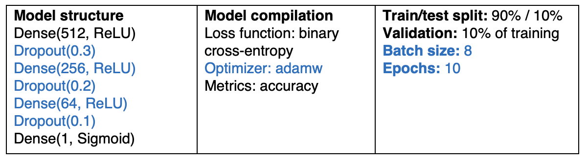

Sarcasm Detector
Background & Motivation
Machine learning models notoriously struggle to understand and react appropriately to sarcastic statements. Sarcasm often conveys a sentiment opposite to the actual meaning, and models mimic human language without sentience. As a result, words that change meanings across different contexts, like “not,” are extremely difficult to interpret.
Our goal is to increase AI’s semantic comprehension by creating a sarcasm detector that can be used as a filter for sentiment analysis models, specifically for short content. Our project explores the question: Can an artificial network effectively detect sarcasm in short text content based on linguistic and contextual clues?
Data & Resources
Our main data source is the Self-Annotated Reddit Corpus (SARC), organized into JSON and CSV files which are publicly available on Github. The JSON file includes 1.3 million sarcastic comments labeled by the authors, with text and metadata for each comment. In addition to the text and id, the metadata includes seven features: author, score, ups, downs, date, created utc, subreddit. A separate CSV file contains train and test data showing context and sarcasm labels. It includes a sequence of comments following a post and a set of responses to the last comment in that sequence (all labeled by id number).
We preprocessed the data to create a new flattened data frame combining the text (contained in the JSON file) and sarcasm labels (contained in the CSV file). We started by reducing the JSON to contain only comments that matched IDs present in the CSV. We then created a new CSV file with only the id, text, and sarcasm label.
(add visualizations of the data - distribution, group by author & subreddit)
We are using the Hugging Face transformers model BERT (Bidirection Encoder Representations from Transformers) as a feature extractor. BERT is a pre-trained large language model that uses masked language modeling (masking 15% of words in a sentence and trying to predict them) and next sentence prediction (concatenating two random sentences and predicting if they were next to each other in the original text). We used BERT to create embeddings to represent the labeled text data.
Initial Design
After preprocessing data, we used BERT as a feature extractor to represent the raw text as token embeddings. We provided the text as input, and received a single 768-dimensional vector as output to represent the full text. This results in a dataset with the shape N x 768, where each row is a fixed-length embedding.
The embeddings serve as input in our classification model, which uses a fully-connected feed-forward neural network. Our initial model structure uses three dense layers; the first two reduce the level of dimensions, compressing the features as the model learns, and the third produces a binary output. Two dropout layers between reduce overfitting.

analysis techniques: one hot model - tokenize text to create 5000-dimension vector for text - one-hot bag-of-words (each word assigned 0 or 1 based on whether it is present or not, w/ no info about context or word order), feed into basic neural network, creates a baseline to compare our model to
Revisions
In order to improve the accuracy of our model and reduce overfitting, we applied several changes to our initial model.
(add images of initial model results)
We switched to mean pooling to get more accurate embeddings from BERT. Previously, we solely used a classification token. Mean pooling allows us to get a vector for every token in the sentence, then take the average to produce a vector representing the sentence. This method creates better semantic similarity to fully represent the entire text.
In the model, we added another dense layer to create a more gradual compression, allowing the model to learn more features before classifying the text embedding. We also switched from a constant dropout to decreasing rates of dropout on the first three dense layers. We used a lower dropout rate toward the end because later layers are smaller and encode more specific information.
We switched the optimizer from adam to adamW (explain more about what this does)
We added two callbacks using Keras. The first, reducing learning rate on plateau, monitors validation loss, and decreases the learning rate if val loss does not improve for 2 epochs. The second, early stopping, also monitors val loss. If it does not improve for 4 epochs, the model stops training and uses weights from the epoch with the lowest validation loss.
Finally, we reduced the batch size and increased the number of epochs. The smaller batch size helps with regularization and reduces overfitting, and a higher number of epochs balances out the smaller batch size. The inreased epochs allows the model to use them if needed, but it also uses early stopping when val loss stops improving.
Results
Outline the results and findings of the project, plots and figures to show the results - ensure they are clear, concise, and relevant.
Discussion
Discuss the context of your results, how the results relate to each other and how to interpret them. Revisit challenges you encountered and how you mitigated or solved them. If applicable, put your project in relation to other work in the same field.
Conclusion
Summarize the main results and implications of your project.